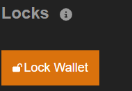

The primary purpose of a locking is to lock your wallet address from accepting inbound delegations such as someone delegating their rights to you. While we do not think this will be a common case,
we could imagine people doing this to then try to socially engineer a third party by pretending your addresses are related. Note that nobody can delegate on your behalf, in any case.
With a collection lock, your address will not accept incoming delegations for a specific collection (you should only do
this after you have made your own delegations, if you are certain that you do not plan to delegate any more addresses, as you would have to then unlock to accept your own delegations).
The example below covers locking inbound delegation for a specific collection.
To lock your wallet for a specific collection:
- Go to the Delegation Center Section and click the 'View/Manage' button for a specific collection (e.g., 'The Memes Collection').
- At the bottom of the Manage/View Any Collection page, click the 'Lock Wallet' button.

- Execute the transaction.